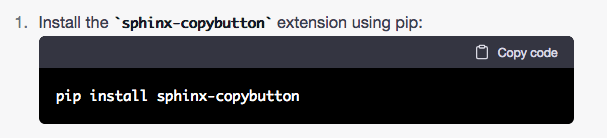
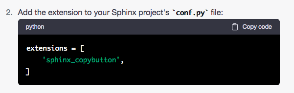
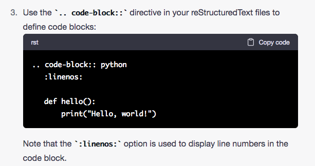
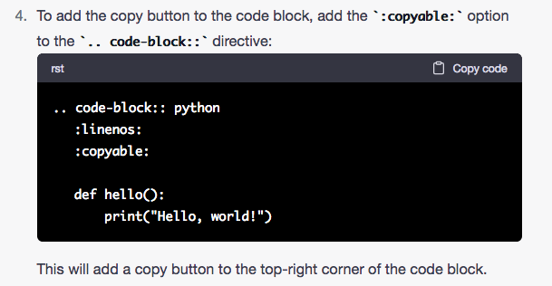
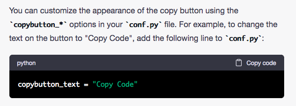

LEARNING
Note
How to Escape Special Characters
* Back Slash to Escape Special Characters.
Attention
Build Command: sphinx-build doc _build
This is the command to build instead of ‘make’.
Header Sizes
H1: document title
Introduction text.
Sample H2
Sample content.
Another H2
Sample H3
The largest Header size is designated by underlining the header with:
====
ie. HEADER
_____________________
The second size Header is designated by four or more dashes - - - - :
-----
The third size Header is designated by four or more tildes ~ ~ ~ ~ :
~~~~
To create a line across the page use:
#### or - - - - with no spaces.
_____________
Alternate Method of bolding:
Note
Note: Indenting four equals ‘= = = =’ signs, yields a bolding of the text. See below.
- ‘Code block ends’
This is comparable to using ** ** for bolding as seen below:
‘Code block ends’
1.. code-block:: python
2 :linenos:
3
4 def hello():
5 print("Hello, world!")
Note
We do not need to escape special characters in code-blocks. ‘:linenos:’ adds lines and needs opens and closes with : :
.. image:: ./Images/EmbedImages.png
:width: 400px
:align: left
{kind=link}
.. image:: ./Images/EmbedImages.png
This is the :ref: target page <target> for more information.
Links
- ref:
Code Blocks
code blocks:
Define Reference text.
:ref:`link text <document_name:section_label>`
:doc:`link text <document_name>`
Define the Target page.
.. _target:
Target Page
===========
This is the target page.
This is a sentence that will :doc: reference usage
Note
Intersphinx is an extension for links between different projects.
Comments are preceded with dot, dot ‘. . ‘ at the beginning of the line.
..
    
This is a bold word.
sphinx-build doc _build
This tutorial uses the theme ‘sphinx_rtd_theme’:
1. pip install sphinx_rtd_theme
2. In Conf.py, add: html_theme = 'sphinx_rtd_theme'
Use the character ‘ | ‘ at the beginning of all sentences. Be sure to add a space after .
| Line block
| New line and we are still on
Please see the installation instructions for more information.
1. File > Settings (on Windows and Linux) or PyCharm > Preferences (on Mac).
2. Select Editor > Code Style > Python.
3. In the Tabs and Indents tab, change the Tab size and Indent options to 3.
v3